Qué hace cada módulo, cómo funciona por dentro y cómo usarlo paso a paso: respaldos, cambios, reversión, cumplimiento, firmware, ciclo de vida, análisis, informes y administración.
OpenNCCM mantiene un historial completo y cifrado de la configuración de cada equipo de red, detecta cuándo y cómo cambia, controla quién puede cambiarla y verifica que cumpla con sus políticas.
La barra lateral agrupa las páginas por tarea: Operar (Cambios, Configlets, Tareas), Proteger (Cumplimiento, Vulnerabilidades, Firmware y ciclo de vida), Observar (Alarmas, Análisis, Informes) y Administrar (usuarios, credenciales, grupos, plataformas, auditoría, sistema y ajustes, en pestañas). Los números junto a Cambios y Alarmas indican lo pendiente. El botón del encabezado de la barra la pliega para dejar solo los iconos.
Con Ctrl K (o el buscador de la barra superior) se abre una paleta para ir a cualquier página, abrir un equipo por nombre, IP, modelo o serie, lanzar acciones o buscar un texto en todas las configuraciones. Los avisos de cada acción aparecen abajo a la derecha; cuando la acción se puede deshacer (por ejemplo, reconocer alarmas) el aviso trae el botón Deshacer.
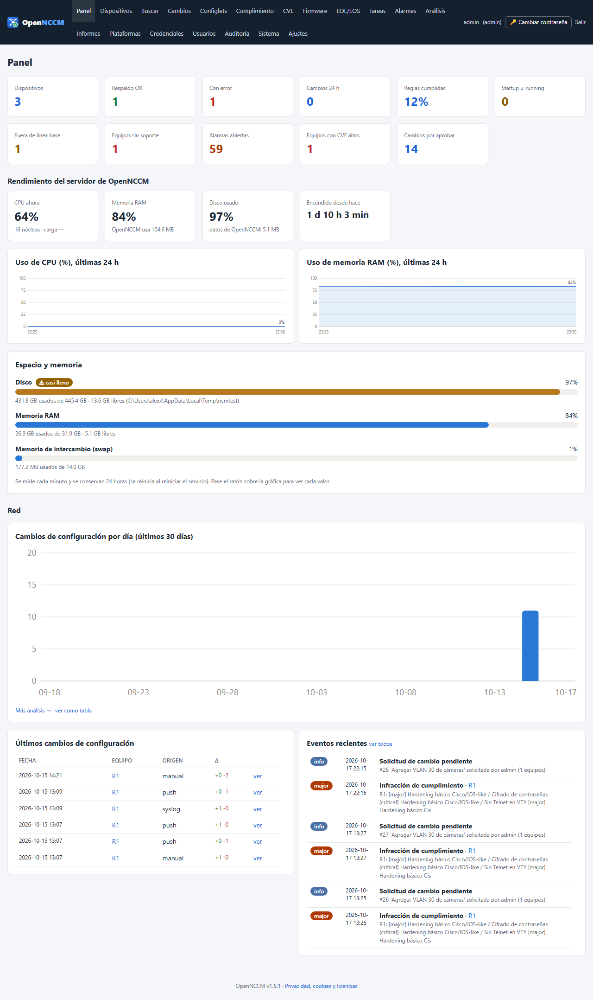
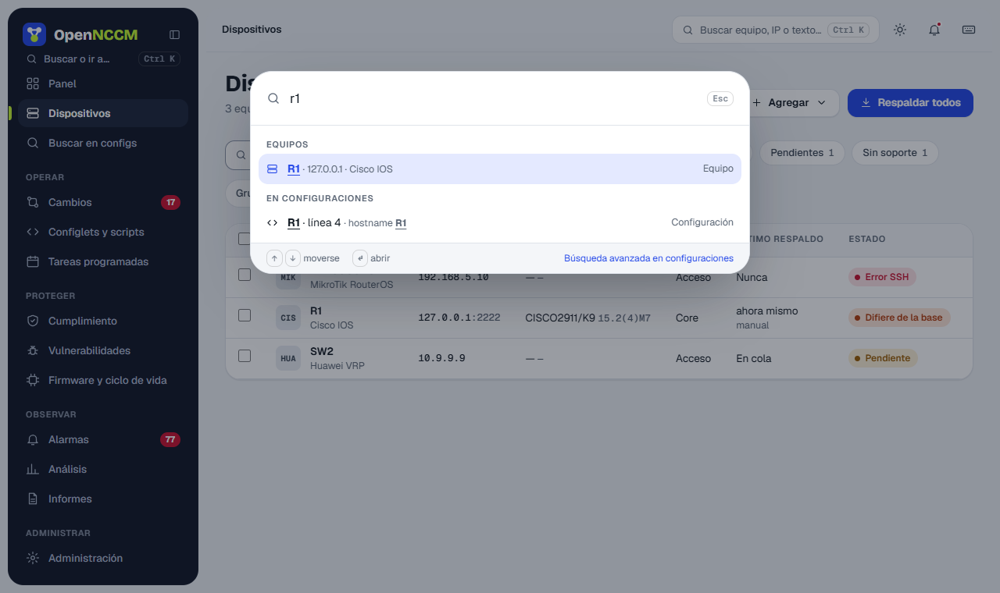
Cada usuario tiene un rol. Además, a los operadores y lectores se les puede restringir a uno o más grupos de dispositivos: solo verán y podrán actuar sobre esos equipos.
| Acción | viewer | operator | admin |
|---|---|---|---|
| Ver panel, dispositivos, versiones, comparaciones, búsqueda, alarmas, informes, análisis | ✓ | ✓ | ✓ |
| Respaldar, auditar cumplimiento, buscar CVE, reconocer alarmas | ✓ | ✓ | |
| Ejecutar configlets de diagnóstico (exec) | ✓ | ✓ | |
| Solicitar cambios, reversiones, correcciones y actualizaciones de firmware | ✓ | ✓ | |
| Etiquetar versiones y marcar línea base; ejecutar tareas ya creadas | ✓ | ✓ | |
| Aprobar o rechazar solicitudes de cambio | ✓ | ||
| Alta/baja de dispositivos, credenciales, grupos, configlets, políticas, tareas | ✓ | ||
| Usuarios, auditoría, ajustes, sistema, imágenes de firmware, base EOL | ✓ |
Para qué sirve: ver de un vistazo el estado de la red y qué conviene hacer primero.
Una puntuación de 0 a 100 resume el estado: 40 % equipos respaldados en las últimas 24 horas, 30 % reglas de cumplimiento que pasan, 15 % equipos sin CVE críticos o altos y 15 % equipos con soporte del fabricante. Debajo, una frase y unas etiquetas dicen qué la está bajando.
| Indicador | Qué cuenta |
|---|---|
| Dispositivos | Equipos gestionados, con su tendencia y cuántos se agregaron esta semana. |
| Respaldo OK | Equipos respaldados correctamente en las últimas 24 horas. |
| Reglas cumplidas | Porcentaje de comprobaciones de cumplimiento (equipo × regla) que pasan. |
| Con error | Equipos cuyo último respaldo falló (en rojo si hay alguno). |
| Fuera de línea base · Startup ≠ running | Equipos que difieren de su línea base o con cambios sin guardar. |
| Equipos sin soporte · Cambios por aprobar | Equipos sin soporte del fabricante y solicitudes pendientes (con la más antigua). |
Cada indicador lleva a la lista filtrada. Necesita tu atención lista los asuntos más importantes ordenados por gravedad (respaldos fallidos, CVE críticos, infracciones, equipos fuera de línea base, cambios por aprobar…), cada uno con su botón de acción. Al lado, la gráfica Cambios de configuración muestra los cambios por día de los últimos 7 o 30 días.
En Administración → Sistema los administradores ven el estado del propio servidor de OpenNCCM: uso de CPU ahora (y carga), memoria RAM, disco usado y espacio que ocupan los datos de OpenNCCM, y el tiempo encendido. Dos gráficas muestran el uso de CPU y de memoria de las últimas 24 horas (promedios cada 5 minutos; pase el ratón para ver cada valor) y unas barras muestran disco, memoria y swap usados, libres y totales. Si el disco o la memoria superan el 90 %, su indicador se marca en rojo.
Para qué sirve: inventario de todos los equipos gestionados, con su estado de respaldo, modelo, versión de firmware y grupo.
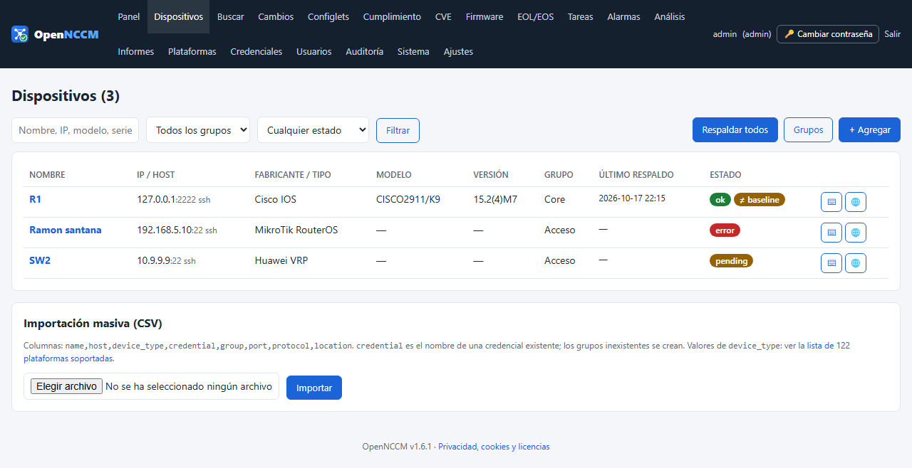
El panel explica las columnas (name,host,device_type,credential,group,port,protocol,location; solo las tres
primeras son obligatorias) y ofrece una plantilla para descargar. Al elegir el archivo muestra una vista previa con cada
fila válida o su error (plataforma desconocida, credencial inexistente, puerto o protocolo no válidos, nombre repetido). Las filas
con error se omiten y las válidas se importan; los grupos que no existen se crean.
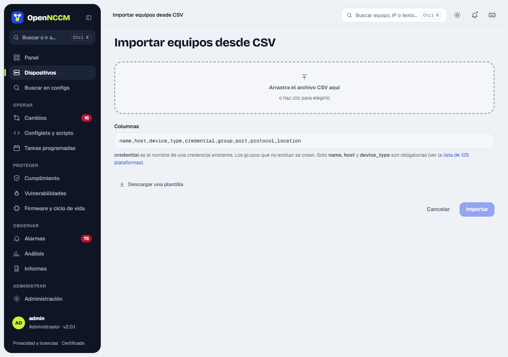
Si los equipos ya están en Zabbix (6.0 o posterior), + Agregar › Importar desde Zabbix los crea sin escribirlos uno a uno:
Las credenciales SSH no están en Zabbix. Si no elige una para todos, los equipos se crean desactivados (no se respaldan ni generan errores) hasta que edite cada uno, le asigne su credencial y su grupo, y lo active. Volver a importar más adelante solo añade los hosts nuevos.
| Campo | Descripción |
|---|---|
| Nombre | Identificador único (por ejemplo el hostname). |
| IP / hostname | Dirección de gestión. Debe ser la misma desde la que el equipo envía syslog. |
| Fabricante / sistema operativo | Perfil de la plataforma (131 opciones agrupadas por fabricante). Define los comandos que se usan. |
| Protocolo y puerto | SSH (22) o Telnet (23). Telnet solo en plataformas que lo admiten. |
| Credencial y grupo | Perfil de usuario/contraseña y grupo del equipo. Puede crear un grupo nuevo desde aquí mismo con «…o crear un grupo nuevo». También se administran en Dispositivos → Grupos. |
| ¿Tiene interfaz web? | Sí (por omisión) muestra el botón Interfaz web del equipo; se puede
indicar su dirección si no es https://IP/. No oculta el botón para los equipos sin página de administración
(muchos switches de acceso, servidores Linux…). Se puede cambiar después en Editar. |
| Comando de respaldo personalizado | Opcional: sustituye al comando del perfil (útil con el perfil «Genérico SSH» o versiones con otra sintaxis). |
| Habilitado | Si se desmarca, el equipo no entra en tareas programadas ni respaldos masivos. |
| Revertir automáticamente | Deshace los cambios no autorizados que se detecten (sección 12). |
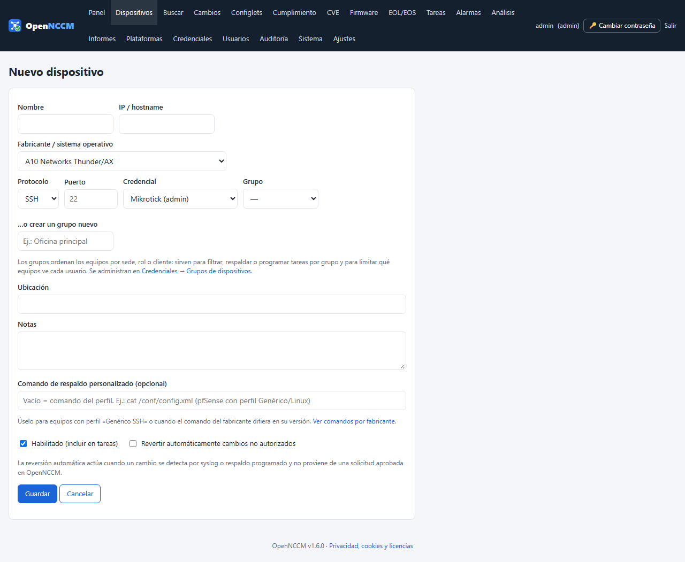
Reúne todo sobre un equipo en pestañas: Resumen (inventario, línea base, ciclo de vida y últimas versiones), Versiones, Cumplimiento, Vulnerabilidades, Firmware y Eventos. Arriba están Consola, Interfaz web y Respaldar ahora; el menú ⋯ agrupa auditar, buscar CVE, actualizar firmware, editar, comparar con otro equipo, ver las diferencias con la línea base, volver a ella (si el equipo aún no tiene línea base, permite marcar la última versión) y eliminar. Para eliminar un equipo hay que escribir su nombre, porque se borra con todo su historial.
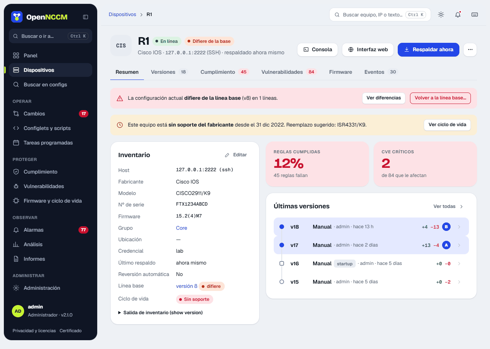
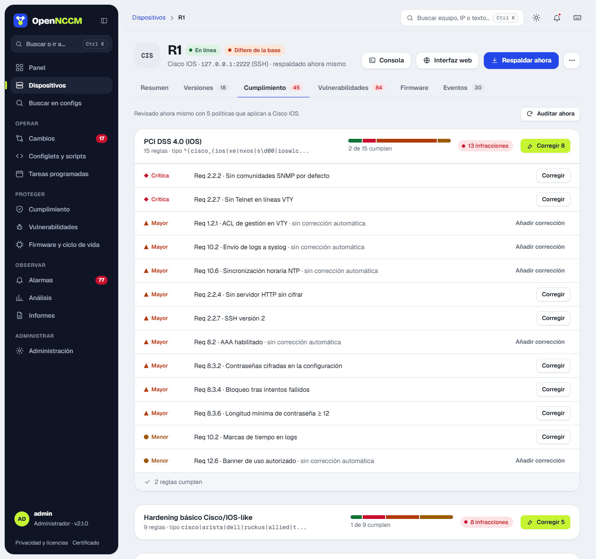
Para qué sirve: entrar a la línea de comandos de un equipo desde el navegador, sin PuTTY ni otro programa.
| Ajuste (Ajustes → Seguridad y acceso) | Efecto |
|---|---|
| Quién puede abrir la consola | Solo administradores (por omisión), administradores y operadores (solo los equipos de sus grupos) o nadie. |
| Iniciar sesión automáticamente | Entra con la credencial asignada al equipo, sin pedir usuario ni contraseña; en Cisco, EdgeSwitch y similares también entra al modo privilegiado si la credencial tiene contraseña de enable. Desactivado por omisión: actívelo solo si quienes pueden abrir la consola deben poder entrar a los equipos sin conocer sus contraseñas. |
El icono de globo (junto al de la consola) y el botón Interfaz web de la página del equipo abren su página de
administración en una ventana aparte. Por omisión se usa https://IP-del-equipo/; si el equipo usa otra dirección o
puerto (por ejemplo http://10.0.0.1:8080), escríbala en Editar → ¿El equipo tiene interfaz web? → Dirección.
Si el equipo no tiene web, marque No en esa misma pregunta y el botón deja de mostrarse. OpenNCCM no interviene en esa
conexión: el navegador se conecta directamente al equipo.
show running-config, display current-configuration, show configuration | display set).Cada versión registra su origen: manual (botón), scheduled (tarea), syslog
(detectado en tiempo real) o push (aplicado por OpenNCCM).
En la ficha del equipo, pestaña Versiones, la flecha › de cada versión la abre en un panel lateral. Desde allí puede descargar, comparar con la anterior, etiquetar (por ejemplo «antes de migración»), marcar como línea base o revertir el equipo a esa versión.
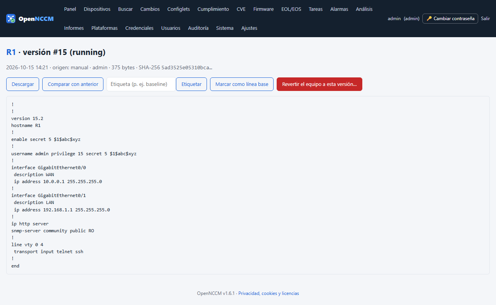
Para qué sirve: ver exactamente qué cambió entre dos versiones, del mismo equipo o de equipos distintos (por ejemplo, para comparar dos switches que deberían ser iguales).
Arriba, Qué cambió resume las diferencias en palabras (por ejemplo «en «interface Gi0/1» se agregó «shutdown»»). La vista lado a lado muestra la versión A a la izquierda y la B a la derecha, con números de línea: en rojo lo eliminado o modificado, en verde lo agregado o modificado. La vista unificada muestra el formato clásico de diff. Las teclas n y p saltan al cambio siguiente o anterior, y la barra fina de la derecha marca dónde están todos.
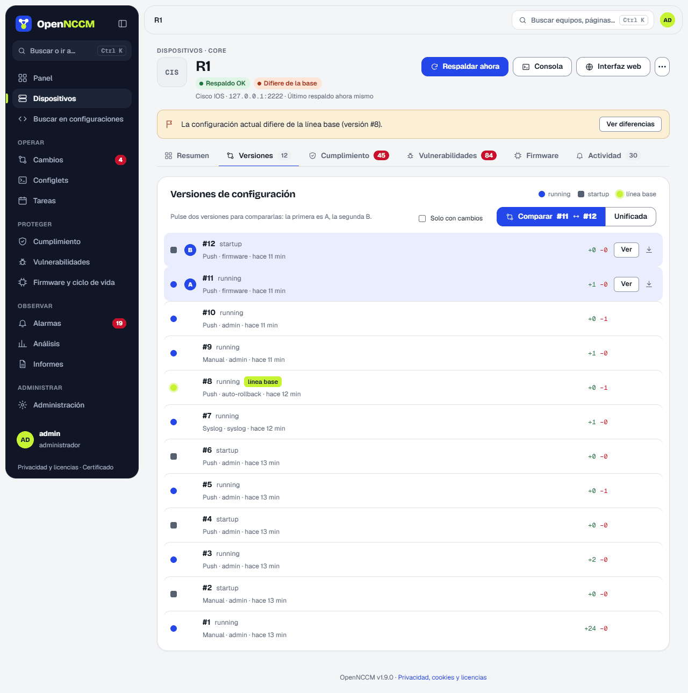
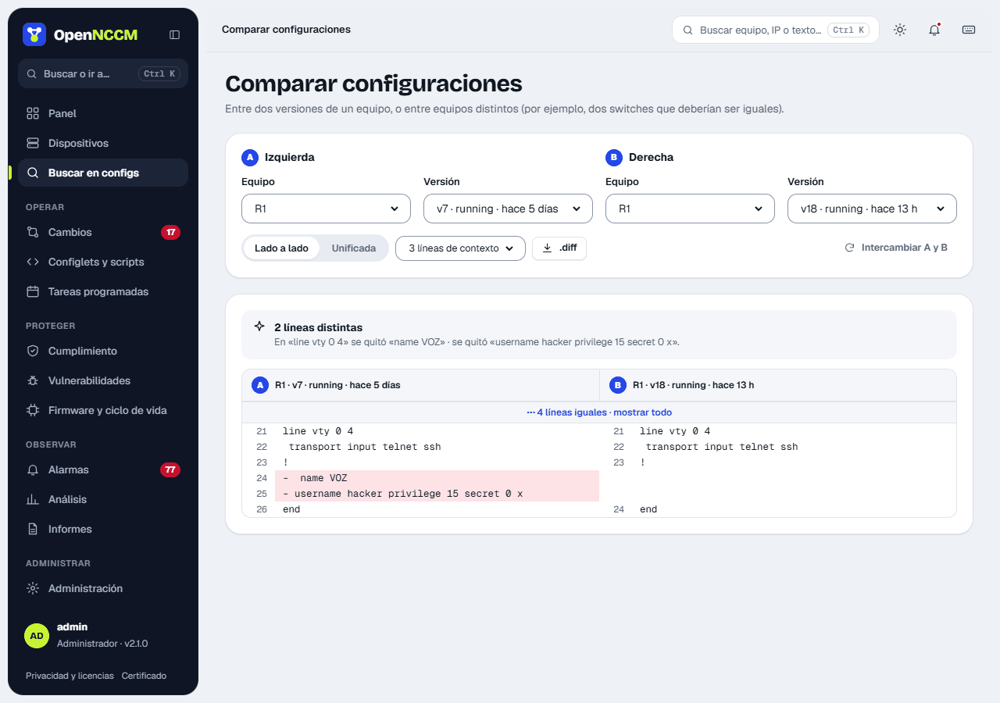
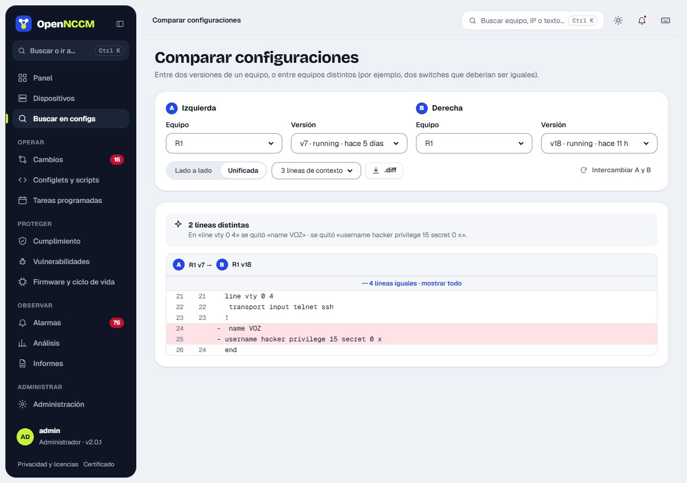
Para qué sirve: fijar la configuración aprobada de cada equipo como referencia, detectar cualquier desviación y poder volver a ella en un paso (por ejemplo, tras un incidente).
Para qué sirve: enterarse en segundos de que alguien cambió un equipo, quedarse con la versión exacta y, si se desea, deshacer el cambio automáticamente.
Para qué sirve: encontrar en segundos en qué equipos aparece algo: una IP, una VLAN, una comunidad SNMP, un usuario.
Escriba el texto (o una expresión regular marcando la casilla) y pulse Buscar. Se busca en la última configuración en ejecución de cada equipo y se muestran las líneas con su número.
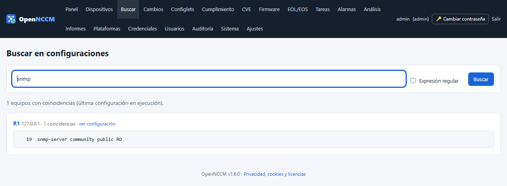
Para qué sirven: plantillas de comandos reutilizables para hacer cambios masivos o diagnósticos en muchos equipos a la vez.
| Tipo | Qué hace | Aprobación |
|---|---|---|
| config | Entra en modo configuración, aplica los comandos y guarda la configuración (o hace commit en Junos, IOS-XR, PAN-OS, VyOS…). | Sí: crea una solicitud de cambio. |
| exec | Ejecuta comandos de consulta (show, display…) y muestra la salida de cada equipo. | No: es inmediato. |
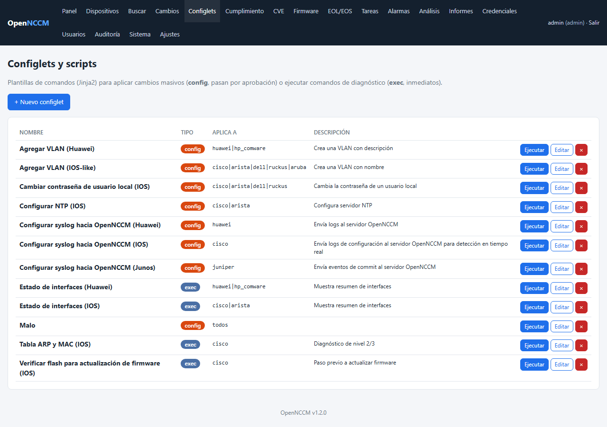
Los comandos son plantillas Jinja2. Puede usar datos del equipo y variables propias que se piden al ejecutar:
vlan {{ vlan_id }}
name {{ vlan_nombre }}
{% if device.group == "Core" %}
spanning-tree vlan {{ vlan_id }} priority 4096
{% endif %}
! aplicado en {{ device.name }} ({{ device.host }})
Variables del equipo: device.name, device.host, device.model, device.os_version,
device.serial, device.location, device.device_type, device.group.
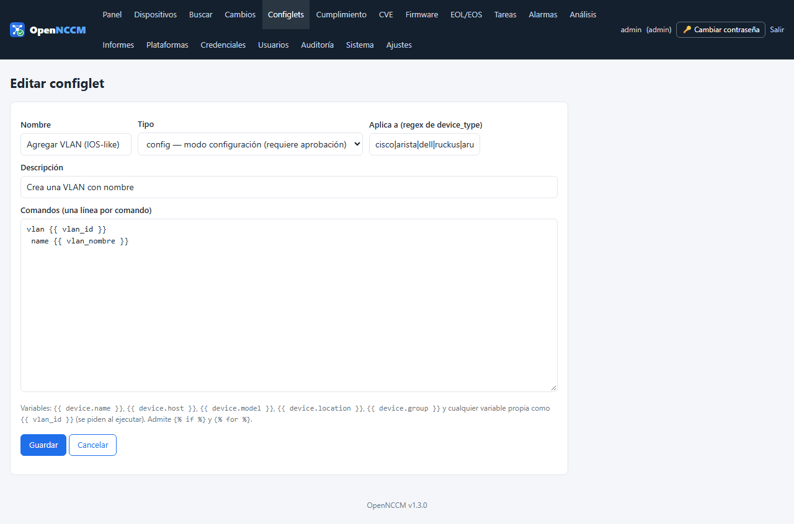
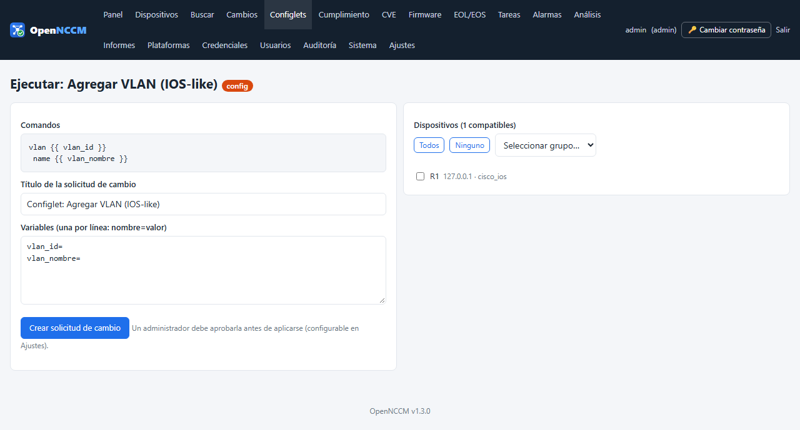
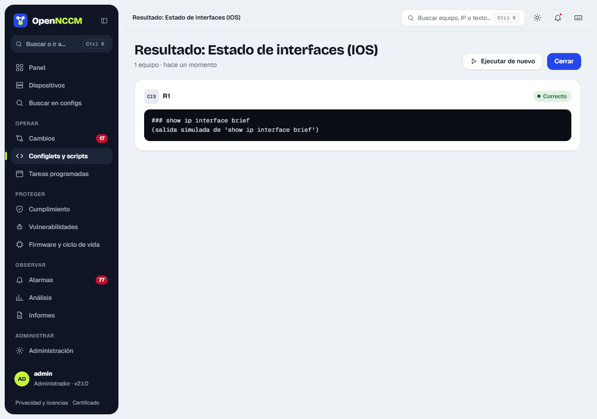
Para qué sirven: garantizar que ningún cambio llegue a la red sin revisión, y dejar constancia de quién lo pidió, quién lo aprobó, qué se aplicó y con qué resultado.
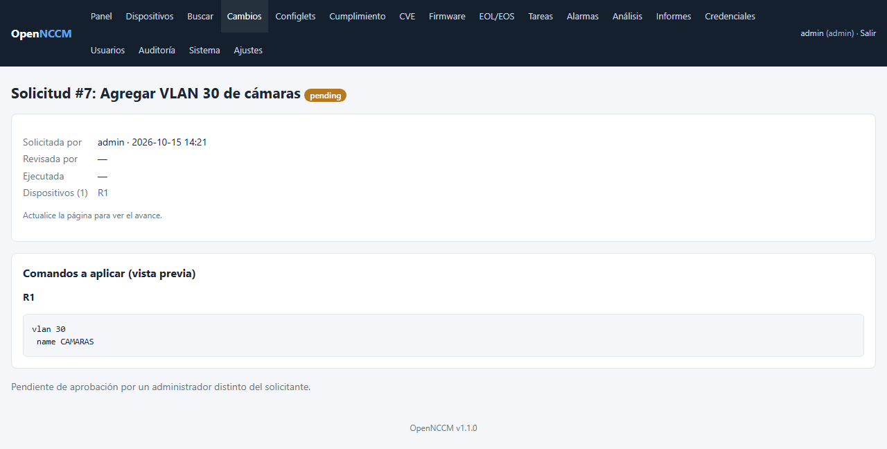
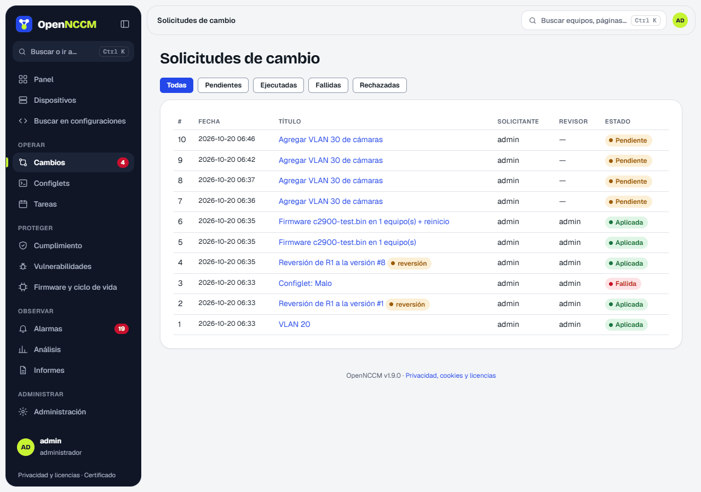
Para qué sirve: devolver un equipo a una configuración anterior que funcionaba.
OpenNCCM compara la configuración actual con la versión destino y genera los comandos necesarios según la sintaxis del fabricante:
| Familia | Ejemplos | Comandos generados |
|---|---|---|
| IOS | Cisco, Arista, Dell, Ruckus, Allied… | Antepone no a lo que sobra y agrega lo que falta, respetando bloques (interfaces, líneas…).
Los ajustes de un solo valor (descripción, IP, VLAN de acceso o permitidas, hostname, usuario) se reescriben sin negarlos
antes, así una IP de gestión no queda un instante sin configurar. Las VLAN nuevas se crean primero y las que sobran se borran al final. |
| Huawei | Huawei VRP, H3C/Comware | Igual, con undo. vlan batch se compara como conjunto:
solo se crean o borran las VLAN que cambian. |
| FastPath | Ubiquiti EdgeSwitch, y cualquier equipo con ese estilo (Dell N-series, Netgear, Broadcom ICOS, UniFi Switch), que se detecta automáticamente | Respeta sus tres ámbitos: modo privilegiado, vlan database y
configure (bloques cerrados con exit). Reescribe los ajustes de un solo valor (descripción, nombre, usuario)
en lugar de borrarlos, usa vlan participation auto para quitar un puerto de una VLAN y nunca cambia la IP de gestión
(network parms) para no cortar la conexión. Orden: primero crea las VLAN que faltan, luego ajusta los puertos y al
final borra las VLAN que sobran. Los comandos se envían de uno en uno: si el switch rechaza uno («Failed to…»), se detiene ahí,
no guarda la configuración y respalda el equipo para registrar su estado real. |
| Set | Junos, VyOS, EdgeRouter | delete … para lo que sobra y set … para lo que falta.
En Junos se aplica con commit confirmed 5: OpenNCCM vuelve a conectar y confirma; si el cambio cortó el acceso, el
equipo vuelve solo a la configuración anterior en 5 minutos. |
| MikroTik RouterOS | RouterOS 6 y 7 | Compara las exportaciones elemento a elemento: set para lo
que cambió (con su selector, p. ej. [ find default-name=ether1 ]), add para lo que falta (las reglas de
firewall vuelven a su posición con place-before) y remove [ find … ] para lo que sobra, en orden inverso
(la IP de una VLAN antes que la VLAN). Se aplica en modo seguro: si un comando falla o la conexión se corta, RouterOS
deshace todo lo aplicado. Probado en RouterOS 7.25, 7.23.8 y 6.49.23 reales. |
| Extreme EXOS | ExtremeXOS | delete vlan, configure vlan … delete ports,
unconfigure vlan … ipaddress, configure iproute delete, enable/disable. Borra
las VLAN que sobran antes de mover sus puertos (un puerto sin etiqueta solo puede estar en una VLAN). |
| Extreme VOSS / Fabric Engine | VSP, Fabric Engine | vlan delete, vlan members remove,
no vlan i-sid, no ip route y bloques interface … exit; los puertos no se borran, vuelven a su valor. |
| Sin reversión por comandos | WatchGuard, FortiGate, PAN-OS, Check Point, airOS, UniFi, SwitchOS… | No se genera ningún comando: volver a aplicar la configuración entera no borra lo añadido y se detiene en la primera línea que ya existe, dejando el equipo a medias. OpenNCCM explica cómo restaurar la versión con la herramienta del fabricante (por ejemplo, Fireware Web UI o WatchGuard System Manager, o el controlador UniFi Network). La reversión automática no se puede activar en ellas. |
En todas las familias: nunca se toca la dirección por la que OpenNCCM gestiona el equipo (cambiarla cortaría la conexión a mitad); lo que no se puede deshacer con seguridad aparece en la solicitud como Revisar a mano, y esa solicitud no se ejecuta sola aunque la aprobación esté desactivada.
Si el dispositivo tiene activada «Revertir automáticamente cambios no autorizados», cuando un cambio se detecta por syslog o por un respaldo programado, y no proviene de una solicitud aprobada, OpenNCCM aplica de inmediato los comandos inversos, vuelve a respaldar y genera una alarma critical «Reversión automática».
Para qué sirve: verificar continuamente que las configuraciones cumplan sus estándares de seguridad y normativas, y corregir las infracciones.
| Política | Reglas | Ejemplos de controles |
|---|---|---|
| PCI DSS 4.0 (IOS) | 15 | Sin Telnet (Req 2.2.7), sin HTTP, sin comunidades SNMP por defecto, contraseñas ≥ 12, bloqueo por intentos, sesión ≤ 15 min, AAA, ACL de gestión, syslog, NTP, banner |
| HIPAA §164.312 (IOS) | 9 | Control de acceso, cierre automático de sesión, auditoría de comandos, transmisión cifrada, SNMPv3 |
| SOX ITGC (IOS) | 8 | Archivo de configuración, registro y accounting de comandos, autenticación centralizada |
| Cisco IOS · Buenas prácticas | 10 | Source routing, PAD, keepalives, BOOTP, timeouts de SSH |
| PCI DSS 4.0 (Junos) | 7 | Telnet, web HTTP, root por SSH, reintentos, idle-timeout, syslog, NTP |
| Extreme VOSS · Seguridad básica | 12 | Sin Telnet, FTP, TFTP ni rlogin; SSH; web solo HTTPS; SNMP sin comunidades por defecto; cierre de sesión ≤ 15 min; RADIUS/TACACS+; syslog; NTP; banner |
| Ubiquiti EdgeSwitch/UniFi · Seguridad básica | 7 | Sin la cuenta «ubnt»; SSH; sin Telnet ni HTTP sin cifrar; SNMP sin comunidades por defecto; syslog; SNTP |
| MikroTik RouterOS · Seguridad básica | 13 | Telnet, FTP, www y API desactivados; Winbox y MAC-Telnet limitados; cortafuegos de entrada; SNMP; syslog; NTP |
| Juniper Junos · Seguridad básica | 13 | Sin Telnet, FTP ni J-Web HTTP; root sin SSH; bloqueo por intentos; sesión inactiva; RADIUS/TACACS+; SNMP; syslog; NTP; banner |
| Ubuntu / Debian · Seguridad básica | 8 | SSH sin root con contraseña ni contraseñas vacías; solo root con UID 0; sudo sin contraseña solo para comandos concretos; cortafuegos activo; actualizaciones automáticas de seguridad; NTP; sin Telnet, rsh ni TFTP |
| FortiGate · Seguridad básica | 11 | Sin Telnet ni HTTP en interfaces; sesión ≤ 15 min; hosts de confianza; política de contraseñas; cifrado fuerte; SNMP; syslog/FortiAnalyzer; NTP |
| Hardening básico (Cisco, Huawei, Juniper, FortiGate) | 3 – 9 | Controles esenciales por fabricante |
Las reglas son controles técnicos de referencia. El cumplimiento normativo completo requiere además procesos y evidencias que no dependen del equipo. Los paquetes nuevos de cada versión se cargan solos al actualizar; si se borra uno, no vuelve a aparecer. Las reglas que dependen de direcciones de cada red (servidores de syslog o NTP, redes de gestión) no tienen corrección automática: indican qué falta y el comando se escribe con las direcciones reales. Una solicitud de cambio con direcciones de ejemplo (192.0.2.x, 198.51.100.x, 203.0.113.x) no se puede aprobar.
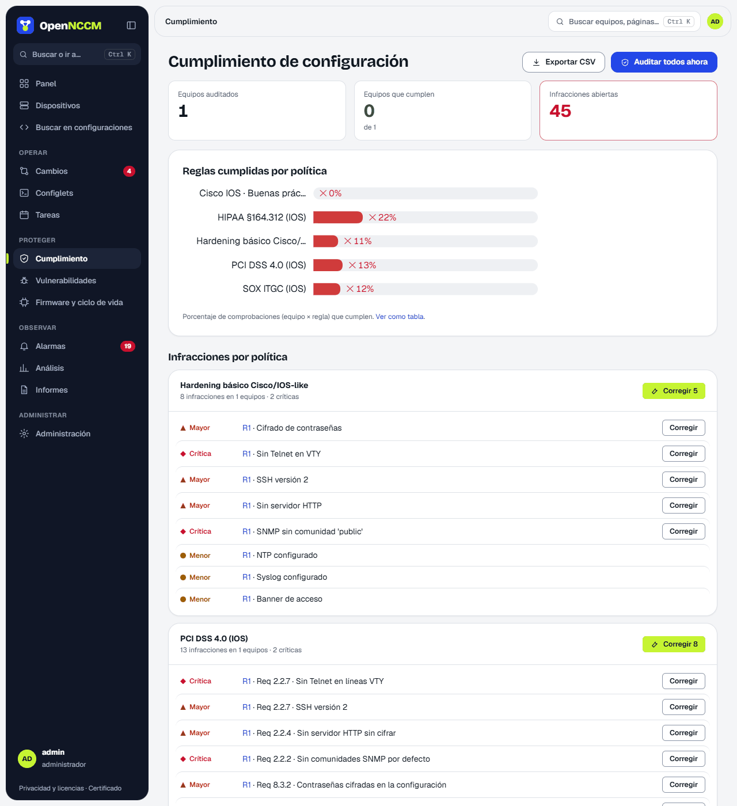
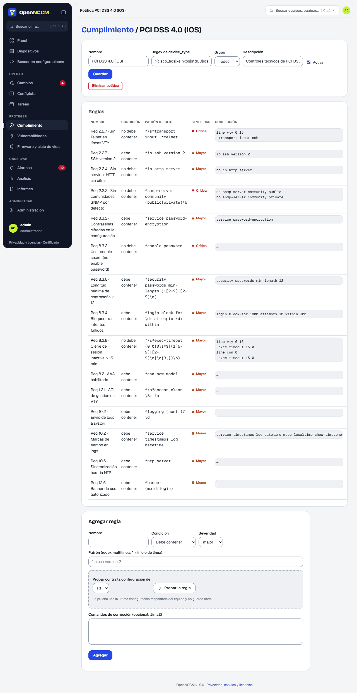
Para qué sirve: saber qué equipos tienen versiones de firmware con vulnerabilidades publicadas.
Con la versión de firmware leída del inventario, OpenNCCM consulta la base pública NVD del NIST. Usa el identificador CPE del fabricante cuando existe (Cisco IOS/IOS-XE/NX-OS/IOS-XR/ASA, Junos, EOS, AOS-CX, FortiOS, PAN-OS, RouterOS, Ubiquiti EdgeSwitch, UniFi Switch y EdgeRouter, WatchGuard Fireware). En Junos convierte la versión al formato de NVD, que separa versión y actualización («21.4R3-S5» se busca como «21.4:r3-s5») y búsqueda por palabras en el resto. Pide los CVE en páginas pequeñas y reintenta cada una si NVD corta la respuesta, así que también funciona con versiones que tienen muchos CVE (por ejemplo, Cisco IOS 12.4). Para Extreme VOSS / Fabric Engine, NVD casi no registra vulnerabilidades: la ficha del equipo lo indica y enlaza a los avisos de seguridad de Extreme. Guarda el ID CVE, la puntuación CVSS, la severidad y el enlace, y genera una alarma crítica si hay CVE críticos. Además descarga (como mucho una vez al día) el catálogo KEV de CISA y marca los CVE «explotado activamente».
NCM_NVD_API_KEY del archivo opennccm.env, que tiene prioridad.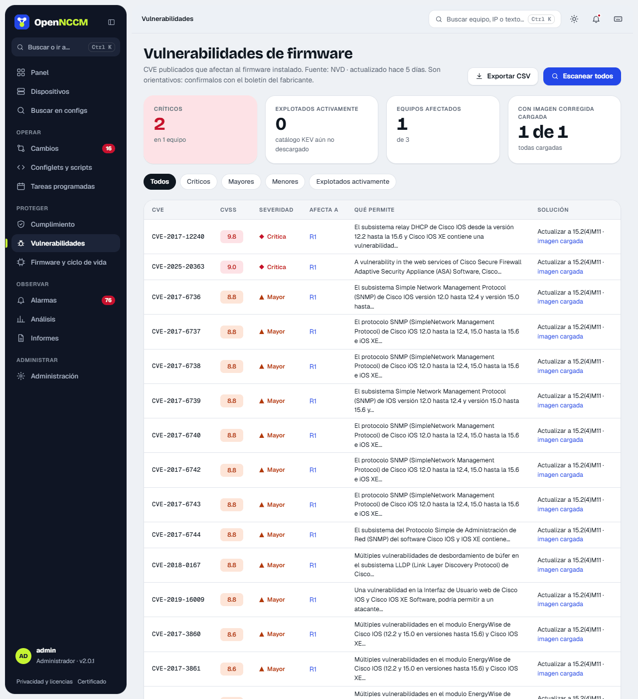
Los resultados dependen de cómo NVD registre cada versión: confirme siempre con el boletín del fabricante.
Para qué sirve: actualizar el sistema operativo de los equipos de forma remota, controlada y verificada.
| Plataforma | Destino | Configuración de arranque |
|---|---|---|
| Cisco IOS | flash: | no boot system + boot system flash:IMAGEN |
| Cisco IOS-XE (modo bundle) | bootflash: | boot system bootflash:IMAGEN |
| Cisco NX-OS | bootflash: | boot nxos bootflash:IMAGEN |
| Cisco ASA | disk0: | boot system disk0:/IMAGEN |
| Arista EOS | flash: | boot system flash:IMAGEN |
| Juniper Junos | /var/tmp | request system software add … no-validate |
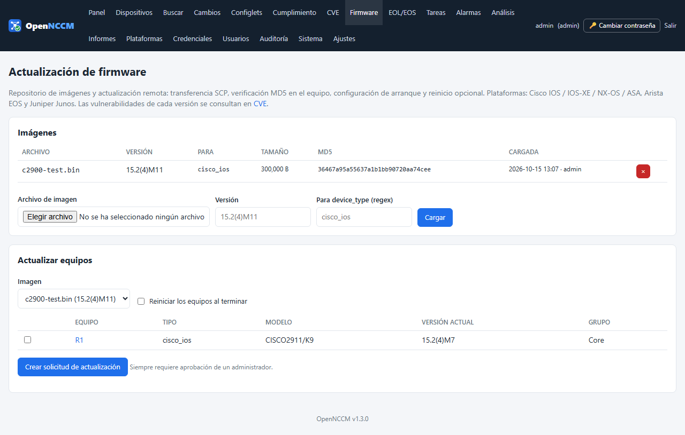
OpenNCCM comprueba una vez al día si hay una versión más nueva del firmware de cada equipo, y lo que mejora. La pestaña Actualizaciones disponibles de Firmware y ciclo de vida lista todos los equipos (primero los que tienen versión nueva); cada equipo muestra la etiqueta Firmware X disponible y, en su pestaña Firmware, la sección Actualizaciones de firmware. Cuando aparece una versión nueva se registra un aviso en Alarmas, una sola vez por versión.
| Equipos | De dónde sale la versión | Descarga |
|---|---|---|
| MikroTik RouterOS | Sitio oficial de MikroTik (estable y long-term), con sus novedades | Sí, el archivo de la arquitectura del equipo |
| Ubiquiti EdgeSwitch, EdgeRouter, UniFi Switch | Catálogo oficial de Ubiquiti, por modelo | Sí |
| Ubuntu Server y Debian | Tabla oficial de versiones (distro-info-data): la LTS o estable más nueva y la fecha de fin de soporte de la instalada | No: se actualiza en el propio servidor (do-release-upgrade) |
| Cisco, Fortinet, Juniper, Palo Alto, Arista, WatchGuard y otros con CPE | Diccionario de versiones de NVD (NIST): la más nueva de su rama y la más reciente | No: el fabricante pide cuenta |
La versión de NVD es la más reciente que NVD conoce, no un anuncio oficial: confírmela con el fabricante. Si NVD no conoce ninguna versión igual o posterior a la instalada, OpenNCCM indica que no puede saber si hay una más nueva.
ip scp server enable.Para qué sirve: saber qué equipos ya no se venden, ya no reciben parches o están por quedarse sin soporte, para planificar su reemplazo.
La base de ciclo de vida asocia un patrón del modelo (expresión regular sobre el modelo del inventario) con sus fechas. Cada equipo toma la primera entrada que coincide y recibe un estado:
| Estado | Condición |
|---|---|
| Sin soporte | Pasó la fecha de fin de soporte. |
| Sin parches de software | Pasó el fin de mantenimiento de software. |
| Fin de soporte < 12 meses | El soporte termina dentro de un año. |
| Fin de venta | Ya no se vende, pero tiene soporte. |
| Vigente | Ninguna de las anteriores. |
| Sin datos | No hay entrada para su modelo. |
vendor,model_pattern,end_of_sale,end_of_sw_maintenance,end_of_support,replacement,url.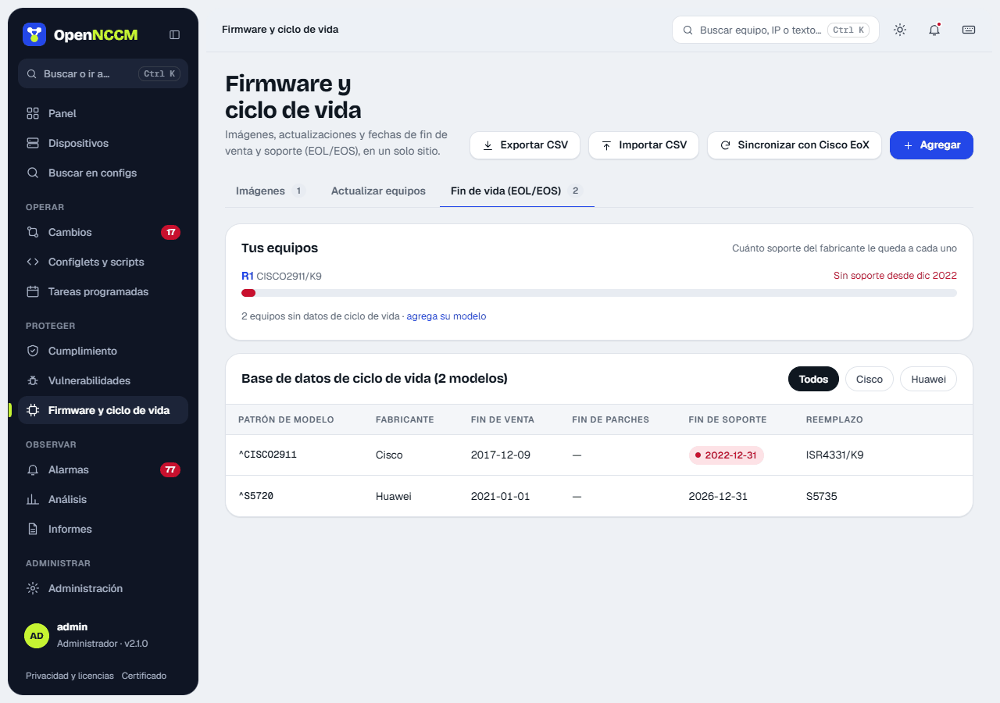
Para qué sirven: automatizar operaciones periódicas, para todos los equipos o para un grupo.
| Acción | Qué hace |
|---|---|
| Respaldo de configuración | Respalda los equipos habilitados (en paralelo). |
| Auditoría de cumplimiento | Re-evalúa todas las políticas. |
| Escaneo de vulnerabilidades | Consulta NVD para cada equipo. |
| Ejecutar configlet | Aplica un configlet (se considera aprobado por el administrador que crea la tarea). |
| Enviar informes por correo | Envía inventario, cambios, cumplimiento, conflictos, línea base y EOL en CSV. |
| Copia de recuperación | Crea una copia de la base de OpenNCCM (y la envía por SFTP si está configurado). |
¿Cuándo se ejecuta? Elija la frecuencia y complete solo lo que pide; debajo se muestra en palabras, por ejemplo «Se ejecutará: Cada lunes y jueves a las 02:30».
| Frecuencia | Qué se elige |
|---|---|
| Todos los días | La hora. |
| Algunos días de la semana | Los días (atajos «lunes a viernes» y «fin de semana») y la hora. |
| Una vez al mes | El día del mes (1 a 28) y la hora. |
| Cada hora | El minuto. |
| Cada pocos minutos | 5, 10, 15, 20 o 30 minutos. |
| Avanzado (expresión cron) | Para casos especiales: minuto hora día mes día-semana; 0 o 7 es domingo y 1 es lunes. |
La hora es la del servidor (Sistema → Fecha, hora y zona horaria). La tabla muestra cada tarea en palabras, su próxima ejecución («hoy 06:00», «lun 07:00»…) y un interruptor para pausarla o reanudarla. Nueva tarea y el lápiz de cada fila abren el asistente en un panel lateral; Ejecutar ya la lanza al momento y Eliminar está dentro del panel de edición.
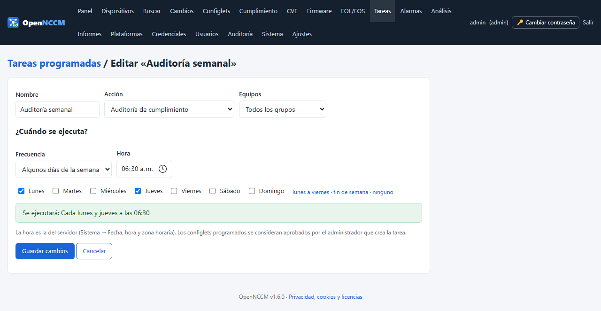
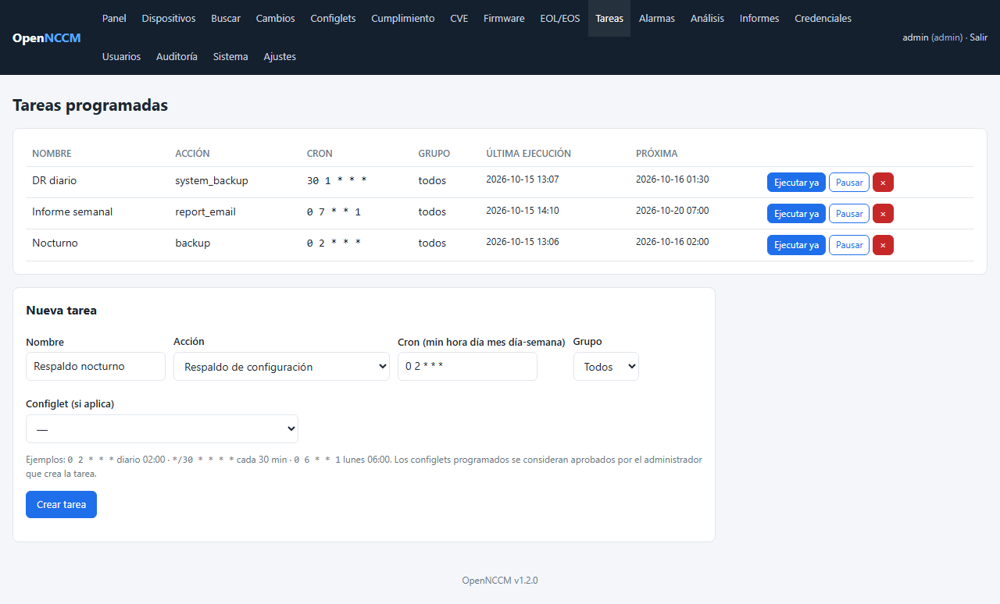
Todo lo relevante genera un evento con severidad por color:
| Severidad | Ejemplos |
|---|---|
| critical | Reversión automática, vulnerabilidad crítica, fallo de copia de recuperación |
| major | Respaldo fallido, infracción de cumplimiento crítica, solicitud fallida |
| warning | Cambio de configuración, conflicto startup/running, desviación de línea base, infracciones |
| info | Syslog recibido, solicitud pendiente o ejecutada, copias creadas |
Alarmas se abre en Sin reconocer (o Todas), con chips por severidad y su recuento. Cada alarma muestra el equipo y hace cuánto ocurrió (el detalle completo aparece al pasar el ratón), con Abrir equipo y Reconocer; también se pueden reconocer todas (con Deshacer en el aviso). Las de severidad igual o mayor a la configurada en Ajustes se envían por correo, webhook (Teams, Slack…) y/o Telegram.
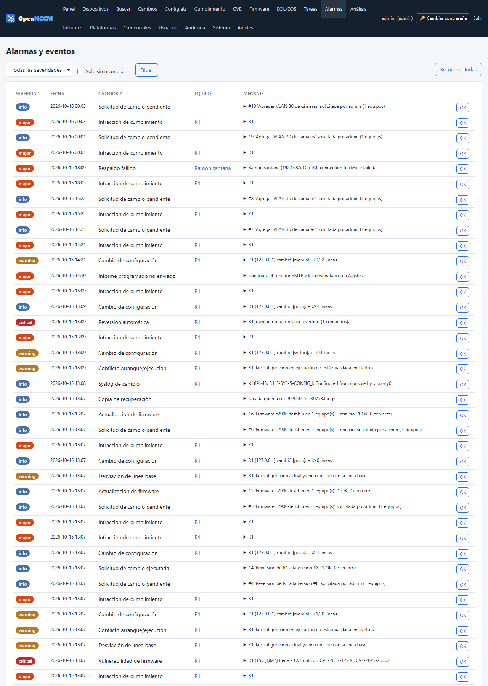
Para qué sirve: identificar patrones: qué equipos cambian más, quién cambia, por qué vía, qué versiones de firmware predominan y cómo está el cumplimiento y el ciclo de vida.
Elija el período (7, 30 o 90 días). La página muestra:
Al pasar el cursor sobre una barra o celda aparece su valor exacto. Los nombres de equipos y políticas son enlaces.
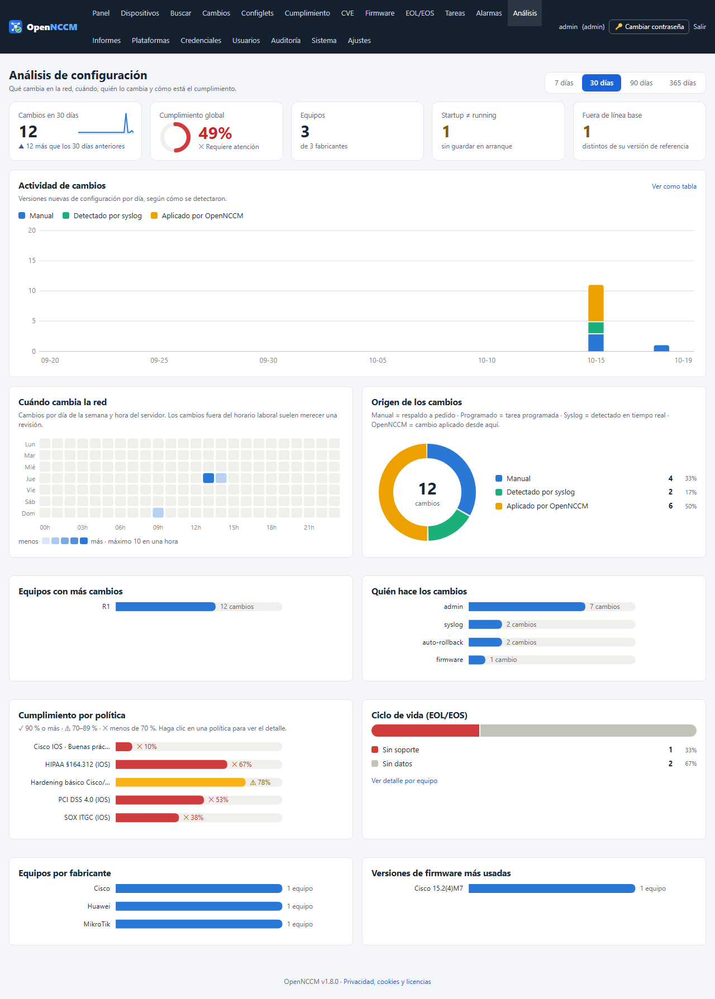
IP y VLAN (menú lateral) reúne las direcciones IP y las VLAN configuradas en todos los equipos, leídas de su última configuración guardada (no se ejecuta nada en los equipos). Reconoce Cisco y similares, Huawei, EdgeSwitch, VOSS, FortiGate, Junos, VyOS/EdgeRouter, MikroTik, EXOS y airOS; solo IPv4. Avisa de las IP configuradas en más de un sitio (en dos equipos o dos interfaces) y de las VLAN con nombres distintos según el equipo. Se puede filtrar por grupo o texto y exportar a CSV.
Mapa de la red (menú lateral) dibuja los equipos y los enlaces entre ellos, con el puerto de cada extremo. Los enlaces salen de
los vecinos LLDP o CDP que cada equipo anuncia, leídos en cada respaldo con una orden de solo lectura (por ejemplo
show cdp neighbors detail en Cisco o /ip neighbor print en MikroTik). Lo admiten Cisco, Arista, Juniper, Huawei,
HP/Aruba, Dell, Ruckus, Allied, MikroTik, EdgeSwitch, UniFi Switch y EXOS, si tienen LLDP o CDP activado.
Cada informe es una tarjeta con Ver (en pantalla, con el periodo de 7, 30, 90 días o un año cuando aplica) y CSV (UTF-8, se abre directamente en Excel). Los administradores pueden enviarlos por correo ahora o programar el envío.
| Informe | Contenido |
|---|---|
| Inventario | Nombre, IP, fabricante, modelo, serie, versión, grupo, estado, conflictos y línea base |
| Cambios de configuración | Cada versión nueva con fecha, origen, usuario y líneas |
| Cumplimiento | Resultado por equipo, política y regla |
| Conflictos startup ≠ running | Equipos con cambios sin guardar |
| Fuera de línea base | Equipos con línea base y si se desviaron |
| Fin de vida (EOL/EOS) | Fechas y estado de cada equipo |
| Vulnerabilidades | CVE por equipo |
| Solicitudes de cambio | Quién pidió, quién aprobó y el resultado |
| Auditoría de usuarios | Inicios de sesión y acciones (solo administradores) |
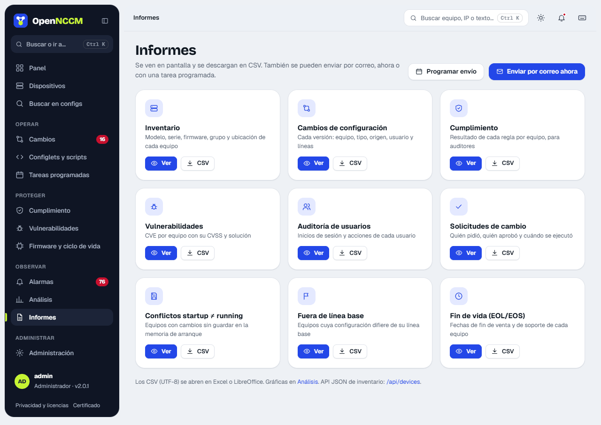
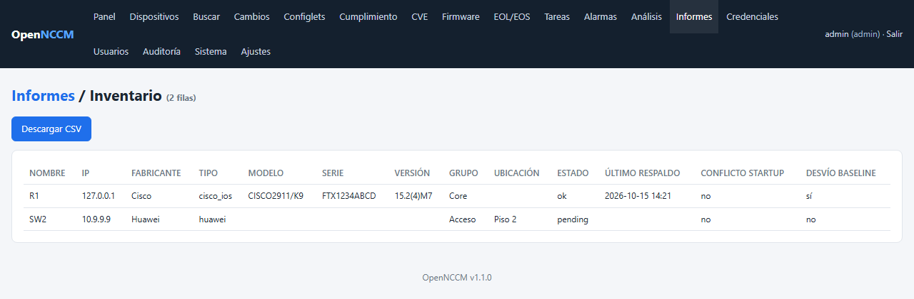
Credenciales: perfiles de usuario, contraseña y contraseña privilegiada (enable) para conectarse a los equipos. Si el equipo entra en modo usuario («>») y la credencial no tiene enable, OpenNCCM prueba la contraseña de ingreso; si no sirve, el error indica en qué credencial escribirla. Se guardan cifradas con AES-256-GCM y nunca se muestran. Están en Administración → Credenciales: la tabla indica cuántos equipos usa cada una y su estado (funciona, falla en N equipos o sin usar). Crear credencial y Actualizar abren un panel lateral; al actualizar, deje en blanco lo que no quiera cambiar.
Grupos (pestaña Administración → Grupos): agrupan equipos (sede, rol, cliente) para filtrar, programar tareas, aplicar políticas y restringir usuarios. La tabla muestra cuántos equipos tiene cada uno, con Ver equipos; se crean con el campo del pie. Se llega aquí también con el botón Grupos de la página Dispositivos, y un grupo se puede crear al editar un equipo. Para asignar un equipo a un grupo: ábralo y pulse asignar grupo (o Editar). Al eliminar un grupo, sus equipos quedan sin grupo.
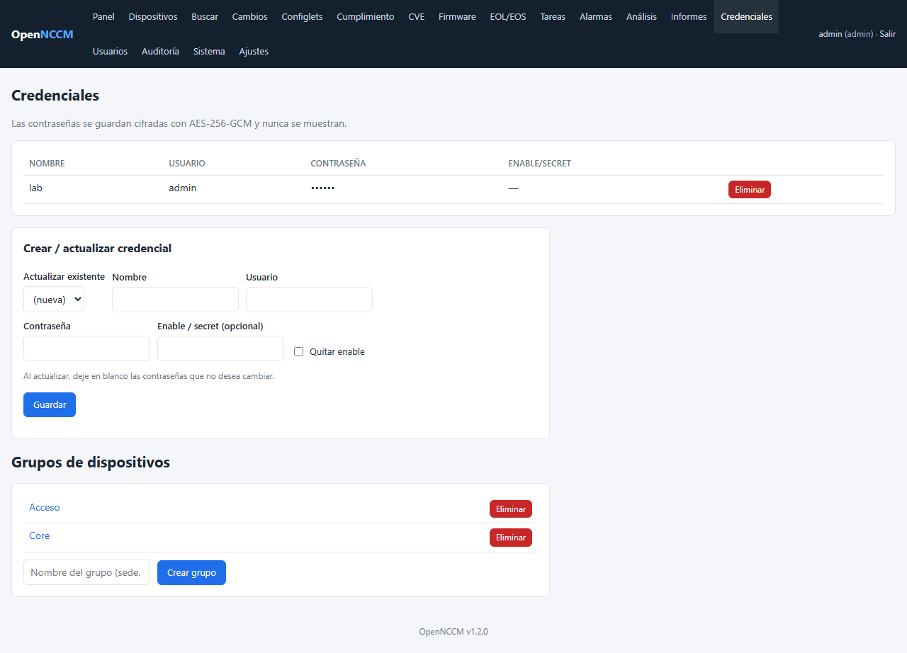
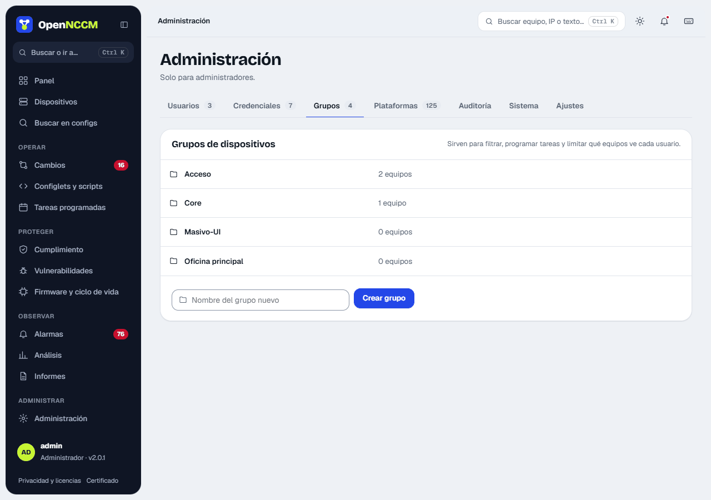
No se permiten dos usuarios con el mismo nombre (sin distinguir mayúsculas). Crear un usuario nunca modifica a otro.
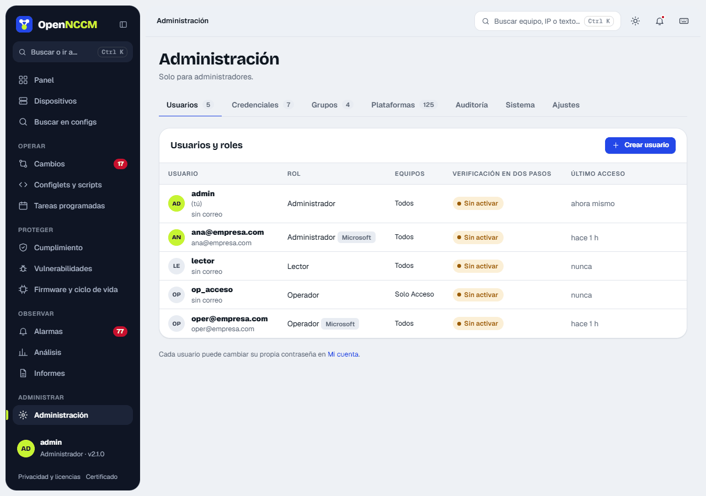
Pulse la fila o Editar para cambiar el rol, el correo, sus grupos, si la cuenta está activa o su contraseña (deje la contraseña vacía para no cambiarla). Al guardar, el mensaje indica exactamente qué cambió (por ejemplo «contraseña cambiada, rol lector»). Desactivar la cuenta impide el ingreso sin borrar el usuario ni su historial. Eliminar está en el mismo panel.
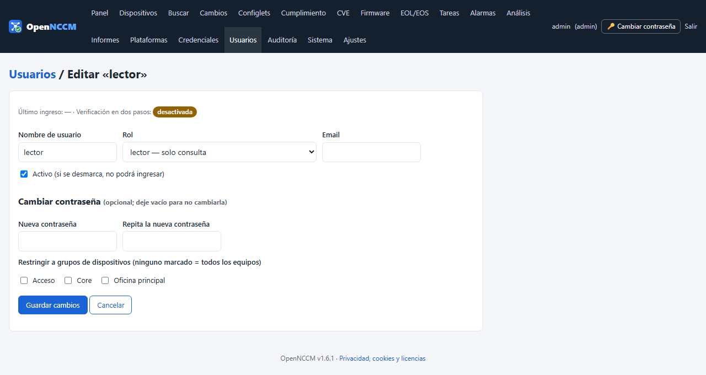
sudo opennccm users lista los usuarios y
sudo opennccm reset-password USUARIO 'CLAVE' fija una contraseña (y lo deja como administrador).Con la verificación en dos pasos, para ingresar hace falta además de la contraseña un código de 6 dígitos que cambia cada 30 segundos en el teléfono. Aunque alguien conozca la contraseña, no puede entrar sin el teléfono.
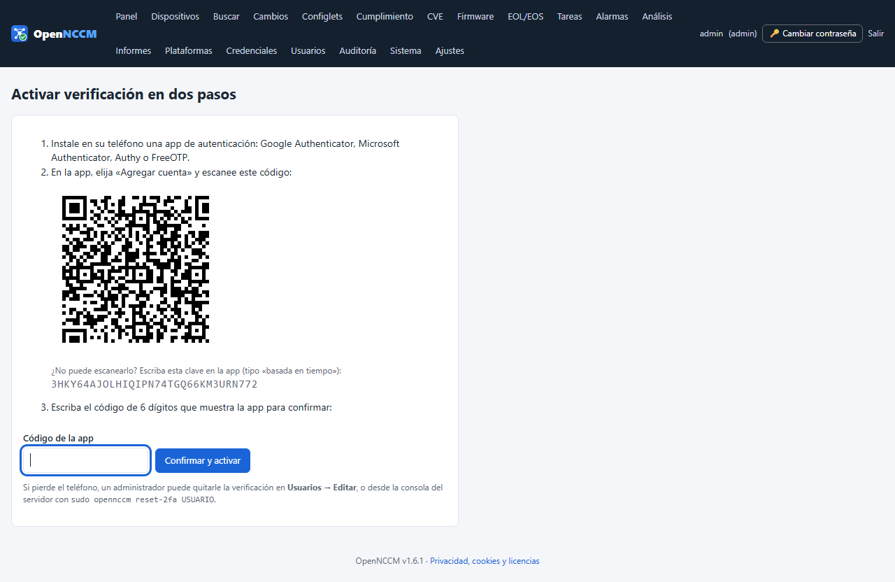
Desde entonces, tras la contraseña se pide el código. Un mismo código no sirve dos veces. Para desactivarla se pide la
contraseña y un código (Mi cuenta → Desactivar…). Si alguien pierde el teléfono, un administrador la quita en
Usuarios → Editar → Quitarla (perdió su teléfono), o en la consola del servidor: sudo opennccm reset-2fa USUARIO. En Ajustes se puede exigir a
todos los administradores (para activarlo, el administrador que lo activa debe tenerla ya).
Cualquier usuario puede cambiar su propia contraseña en Mi cuenta → Cambiar mi contraseña (también desde Ctrl K): escriba la actual y la nueva dos veces. A la derecha, la lista La nueva contraseña debe tener marca en verde cada requisito cumplido (10 caracteres, letras, números y que las dos coincidan). Las mayúsculas y minúsculas cuentan.
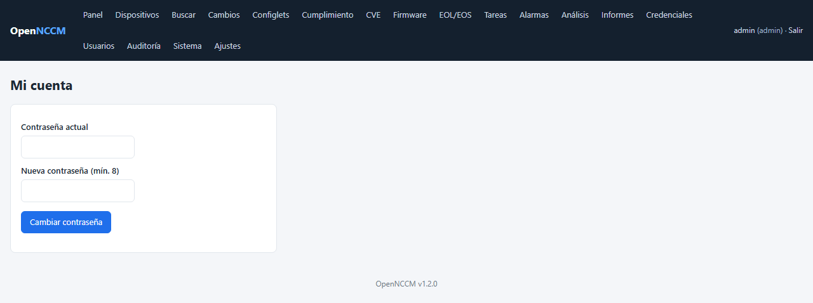
La interfaz está en español e inglés. Cada usuario elige el suyo en Mi cuenta → Idioma o en la pantalla de ingreso (selector debajo del formulario); la elección se guarda en su usuario y se aplica en cualquier equipo desde el que ingrese. Si un usuario no eligió, se usa el idioma del navegador y, si no está disponible, el idioma predeterminado que fija el administrador en Ajustes → Seguridad y acceso → Idioma.
Se traducen los menús, páginas, avisos, gráficas y la consola SSH. Los datos siguen en el idioma en que se crearon: nombres de políticas y reglas, eventos ya registrados, descripciones de CVE, el registro de auditoría y estos documentos PDF. Los informes CSV mantienen sus encabezados en español para no romper integraciones.
En Mi cuenta → Apariencia (o en el botón de tema de la barra superior) cada usuario elige, y se aplica al instante: Automático (claro u oscuro según el sistema del equipo), Claro, Sala de control (oscuro) o Alto contraste (para pantallas con mucho reflejo o baja visión), y un color de acento para botones y enlaces: cobalto, bosque, arena, lavanda, océano, atardecer o grafito. Todos cumplen el contraste mínimo de lectura WCAG 2.1 AA. La elección se guarda en el usuario y se aplica en cualquier equipo desde el que ingrese; quien usaba uno de los temas anteriores de colores conserva su color como acento. La densidad de tablas (cómoda o compacta) ajusta el alto de las filas; «Compacta» acorta además la tabla de Dispositivos y las listas de Cambios y Alarmas. Una vista previa muestra el cambio al instante.
Paginador: las listas de Cumplimiento, Vulnerabilidades, Alarmas, Usuarios, Credenciales, Grupos y Auditoría muestran 15 elementos por página, con la opción de ver 25, 50 o 100 debajo de la lista. La elección vale mientras se está en la página: al volver a entrar son 15 otra vez.
Recordarme en este equipo: la casilla del inicio de sesión recuerda el usuario en ese navegador y mantiene la sesión abierta los días que fije un administrador en Ajustes (14 por omisión), sin cerrarla por inactividad. Además pide al gestor de contraseñas del navegador que guarde la contraseña; OpenNCCM no la guarda. Los navegadores solo la guardan si confían en el certificado del servidor: si muestran «No es seguro», instale el certificado con el enlace del inicio de sesión. No conviene marcarla en equipos compartidos. Cambiar la contraseña cierra también las sesiones recordadas.
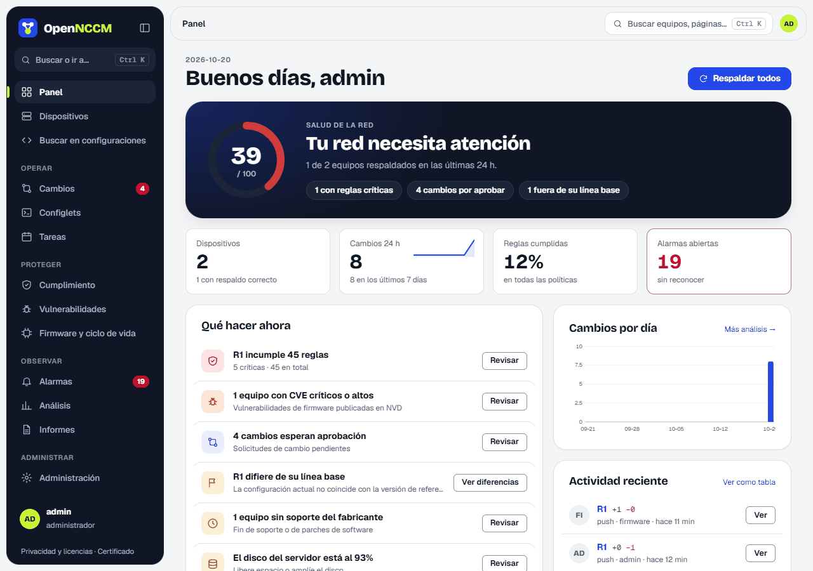
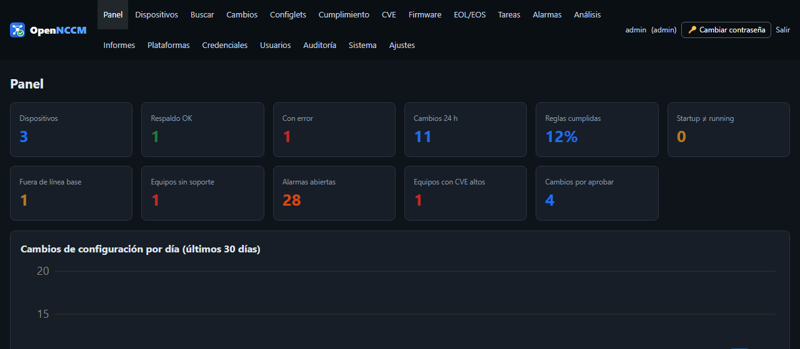
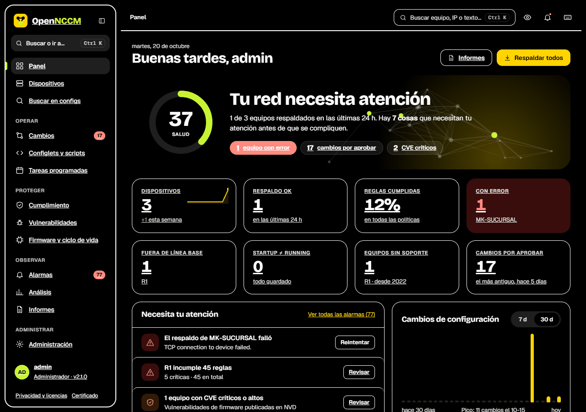
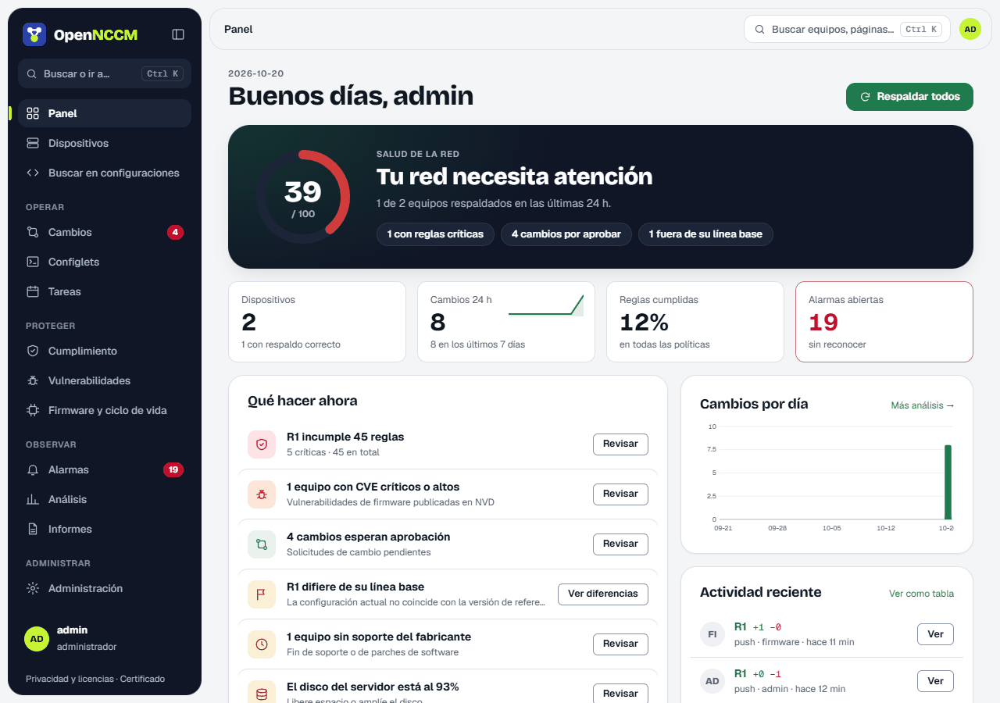
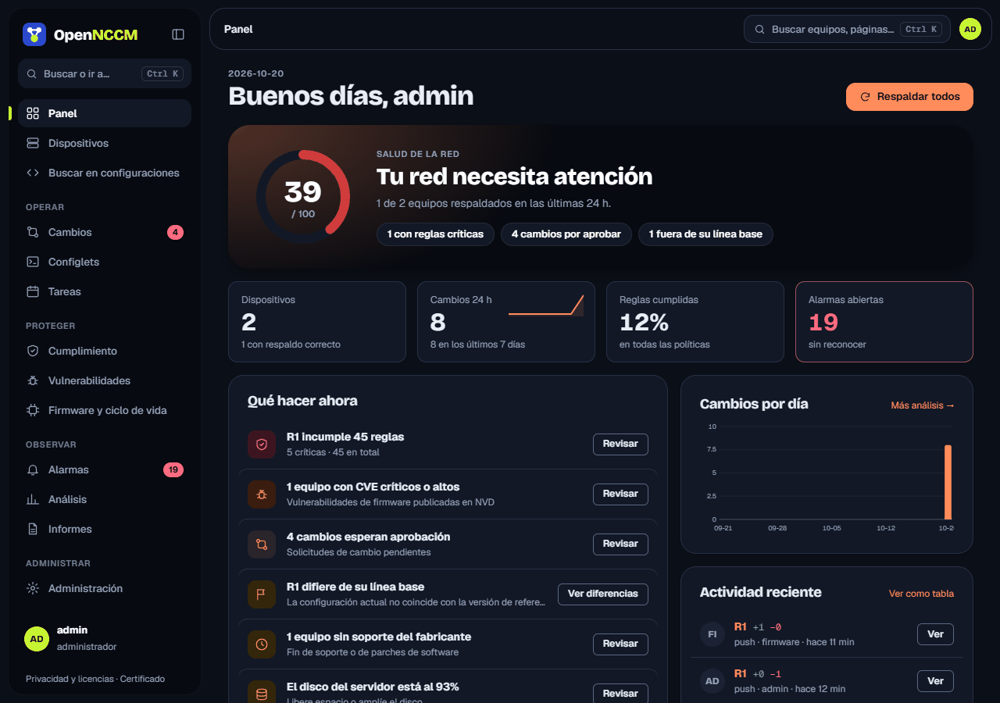
Registro de quién hizo qué, cuándo y desde qué IP: ingresos (y fallidos), respaldos, descargas de configuración, cambios de dispositivos y credenciales, solicitudes y aprobaciones, reversiones, firmware, informes y ajustes. Se puede buscar por usuario, acción o detalle y exportar.
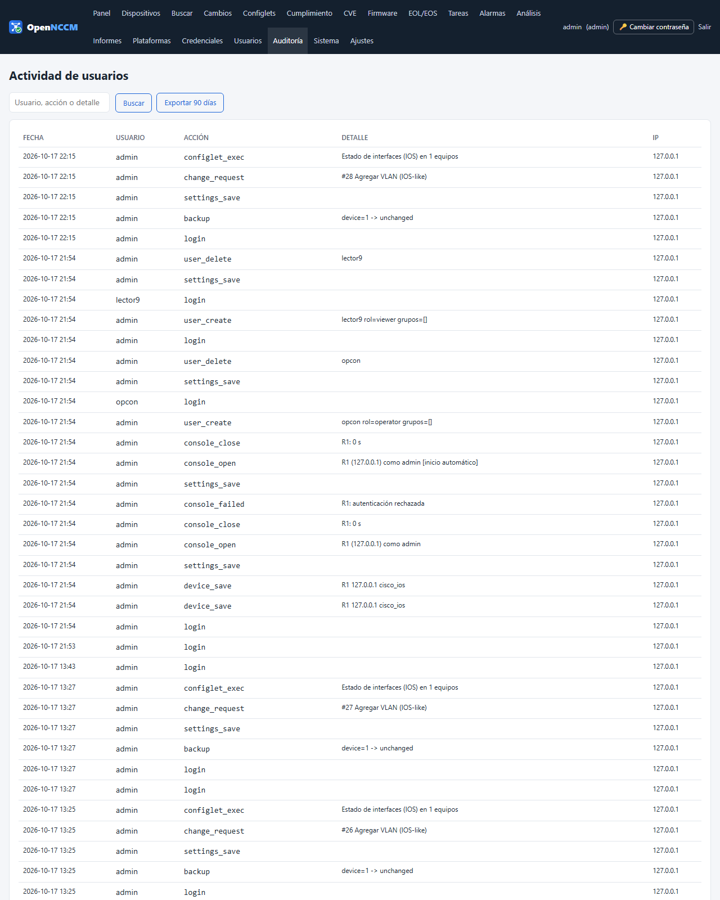
La tarjeta Actualizaciones muestra la versión instalada y la última publicada. Buscar ahora consulta GitHub; OpenNCCM también lo hace una vez al día (desactivable en Ajustes) y, si hay una versión nueva, muestra a los administradores un aviso con sus novedades (Ver y actualizar o Más tarde, que no lo repite en esa sesión).
Novedades de cada versión abre una ventana con lo que agregó o corrigió cada versión (la instalada aparece marcada) y, si hay una nueva, sus novedades antes de actualizar. Todas las versiones en GitHub abre la página de publicaciones del proyecto.
Actualizar ahora (pide confirmación) hace lo mismo que sudo opennccm update en la consola: copia previa del código y
la base, instalación, verificación y vuelta automática a la versión anterior si la nueva no arranca. Una página muestra el
progreso; OpenNCCM se detiene 1-2 minutos. Por seguridad la aplicación no tiene permisos de administrador del sistema: solo deja
una solicitud que atiende un servicio de systemd (opennccm-webupdate) instalado a partir de la 1.6.0.
Si marca «Incluir la clave de cifrado», el archivo completo se cifra (AES-256-GCM) con una contraseña de al menos 12
caracteres que usted elige, y termina en .enc. Sin esa contraseña no se puede restaurar: guárdela aparte. Al
restaurar con sudo opennccm restore ARCHIVO.enc se la pide.
La pestaña Sistema muestra además el rendimiento del servidor, el espacio, la fecha y hora del servidor, la base de datos y la clave en uso, y las copias de recuperación: Crear copia ahora (con o sin la clave de cifrado), descargar, eliminar y Restaurar… (explica el comando de consola que la restaura).
El servicio no tiene privilegios de administrador: el instalador le concede, mediante una regla de polkit, permiso solo para estas tres acciones. Cada cambio queda en Auditoría.
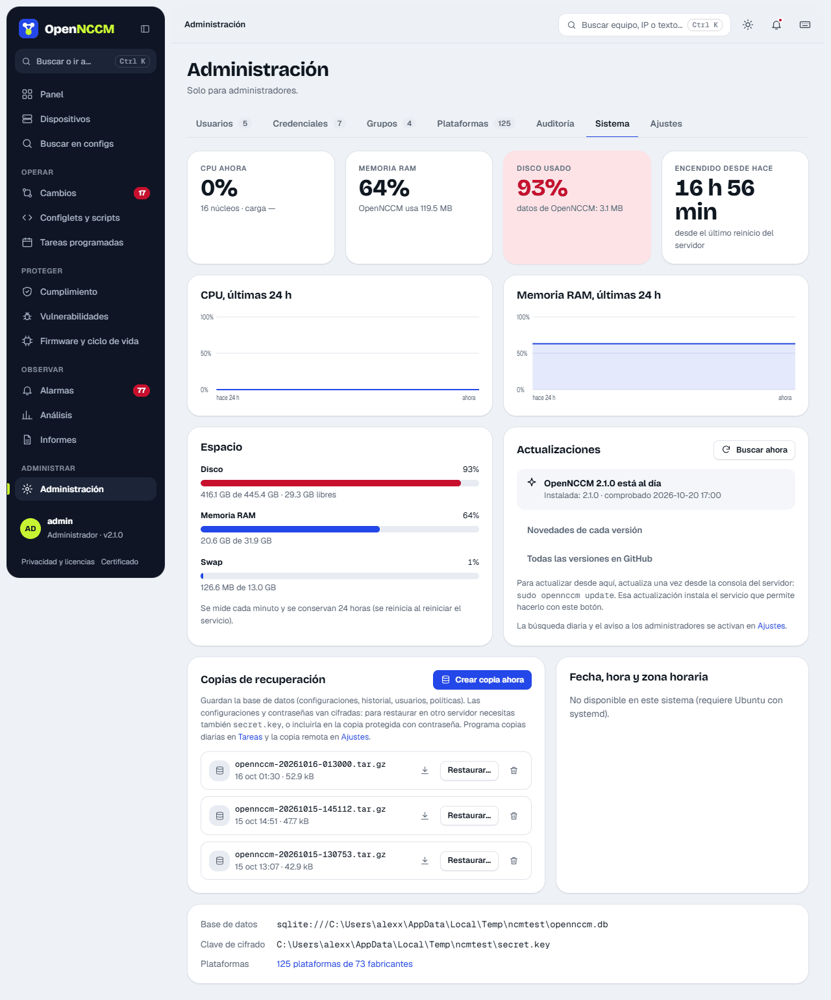
Con Subir cada versión nueva a Git, cada respaldo con cambios se sube como un commit a un repositorio Git (GitHub, GitLab,
Gitea…), con un mensaje como «R1: +3/-1 líneas [scheduled]». Cada equipo es un archivo <grupo>/<equipo>.cfg
con su última configuración. El repositorio se indica por HTTPS con usuario y token (se guarda cifrado y nunca se escribe en
la URL ni en el disco) o por SSH con la clave del usuario del servicio. Ocultar contraseñas y claves (activado por omisión)
sustituye por <oculto> los secretos, contraseñas, comunidades SNMP y claves que reconoce; aun así, use un
repositorio privado. Probar y subir todo ahora exporta todos los equipos de una vez. Si la subida falla, se registra una alarma
«Copia en Git fallida» y el respaldo no se ve afectado.
OpenNCCM es software libre y gratis. Los administradores ven en la barra superior el botón Apoya OpenNCCM, y las páginas Sistema y Acerca de muestran una tarjeta con las formas de donar (GitHub Sponsors y Ko-fi). Tras actualizar a una versión nueva, el primer administrador que entra ve una vez un aviso con Donar y Ahora no. Los enlaces solo se abren si se pulsan, en una pestaña nueva, y no se envía ningún dato del servidor.
El procedimiento completo de copia, restauración en otro servidor, actualización y vuelta atrás está en la Guía de instalación (secciones 13 y 14).
Los ajustes están en Administración → Ajustes, separados en secciones que se eligen a la izquierda: Seguridad y acceso, Organización, Flujo de cambios, Notificaciones, Fin de vida (Cisco EoX), Vulnerabilidades (NVD), Mapa de la red, Copia en Git, Recuperación ante desastres y Actualizaciones. Al modificar cualquier campo aparece abajo la barra Tienes cambios sin guardar con Descartar y Guardar ajustes; si intenta salir de la página sin guardar, el navegador lo advierte.
| Ajuste | Qué hace |
|---|---|
| Cerrar la sesión tras N minutos sin actividad | 5 a 720 minutos (30 por omisión). |
| «Recordarme» mantiene la sesión abierta durante N días | 1 a 30 días (14 por omisión); 0 quita la casilla del inicio de sesión. Las sesiones recordadas no se cierran por inactividad. |
| Exigir verificación en dos pasos a los administradores | Un administrador sin ella solo puede entrar a «Mi cuenta» hasta activarla. |
| Idioma predeterminado | Español o inglés para quien no eligió idioma y cuyo navegador no pide uno disponible. |
| Consola SSH web | Quién puede abrirla y si entra con la credencial del equipo (ver capítulo 4). |
En Ajustes → Inicio de sesión se puede permitir que las personas entren con su cuenta de la organización. Las cuentas locales de OpenNCCM siguen funcionando siempre (por ejemplo, la del administrador que lo instaló).
| Directorio | Cómo se entra | Qué hay que configurar |
|---|---|---|
| Active Directory (LDAP) | Con el mismo formulario: usuario (o usuario@dominio) y la contraseña de la red. | Servidor (ldaps://dc01.empresa.local, o ldap:// con StartTLS), base de búsqueda, una cuenta de servicio
con permiso de lectura, el filtro de usuario y los grupos de cada rol. Probar conexión comprueba la cuenta de servicio y, si se
escribe un usuario de prueba, qué rol tendría. |
| Microsoft Entra ID (Azure AD) | Botón Entrar con Microsoft en la pantalla de ingreso (inicio de sesión único con Microsoft 365). | Registre una aplicación en Entra ID → Registros de aplicaciones con la URI de redirección que muestra la página, y copie el ID de directorio (tenant), el ID de aplicación y un secreto de cliente. Para asignar roles, agregue la notificación groups en Configuración del token (o use roles de aplicación) y escriba el Object ID de cada grupo. |
Nombre, correo de contacto y dirección de quien administra esta instalación. Se muestran en la página Privacidad, cookies y licencias (enlace al pie de cada página y en el inicio de sesión), que explica qué datos guarda OpenNCCM, sus conexiones externas, la única cookie que usa (técnica, sin necesidad de consentimiento), las condiciones de uso y las licencias.
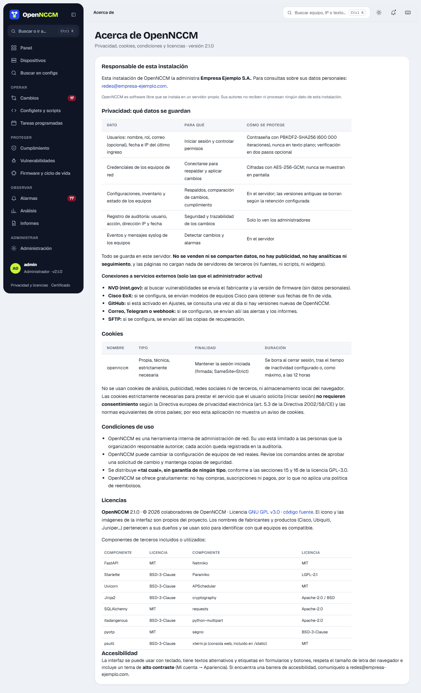
| Sección | Opciones |
|---|---|
| Flujo de cambios | Requiere aprobación o ejecución directa · auto-aprobación · avisar infracciones · versiones a conservar |
| Notificaciones | Severidad mínima · SMTP · destinatarios · webhook · Telegram · notificación de prueba |
| Fin de vida (Cisco EoX) | Client ID y Secret para fechas de ciclo de vida |
| Recuperación ante desastres | Copias a conservar · servidor SFTP remoto (servidor, puerto, usuario, contraseña, carpeta) |
| Actualizaciones | Buscar versiones nuevas cada día y avisar a los administradores |
Las contraseñas de SMTP, de la API de Cisco y del SFTP se guardan cifradas y no se muestran: el formulario indica «(guardada)».
Administración → Plataformas. Muestra las 131 plataformas en fichas (las comprobadas en su red llevan una marca) y,
en Comandos de cada plataforma, su device_type y los comandos que se ejecutan en cada una: respaldo, arranque (startup, para detectar cambios sin guardar) e inventario (modelo, serie y versión);
además el tipo de reversión y si admite actualización de firmware.
La configuración se obtiene mostrando el resultado del comando dentro de la misma sesión SSH: no se crean archivos en el equipo ni se necesita FTP/TFTP. Si un comando no sirve para su versión, defina un comando de respaldo personalizado en el dispositivo. Para equipos sin perfil propio (SonicWall, Riverbed, Infoblox…) use Genérico SSH con un comando personalizado.
pfSense y OPNsense tienen perfil propio: OpenNCCM atraviesa el menú de consola (opción «8) Shell») y respalda el archivo
config.xml completo, el mismo que exporta la web. Use el usuario admin/root (el archivo solo lo lee
root); el inventario trae versión, modelo y número de serie. Los cambios se siguen haciendo desde la web del cortafuegos.
Alpine Linux respalda red, DNS, paquetes instalados (apk world), servicios, SSH y reglas del cortafuegos.
Ubuntu Server / Debian (Ubuntu 26.04, 24.04 y 22.04 LTS; Debian 12 y 13) respalda solo configuración en texto: nombre,
red (netplan o /etc/network/interfaces), DNS, SSH, cuentas y grupos, sudo, repositorios, paquetes instalados a mano
(no la versión de cada uno, que cambia a diario), servicios activados, tareas de cron, hora (chrony o timesyncd) y cortafuegos
(ufw, iptables y nftables, sin contadores de paquetes). Nunca copia contraseñas (/etc/shadow), claves privadas,
certificados ni datos, y las contraseñas de wifi de netplan salen como ***. Un respaldo típico ocupa unos 20–60 KB.
Algunos archivos (netplan, crontab de root) y el cortafuegos solo se leen como root: dé al usuario de OpenNCCM sudo
sin contraseña, mejor solo para esos comandos de lectura; sin sudo se respalda el resto. El inventario lee la versión
de /etc/os-release, y Actualizaciones disponibles avisa de la nueva LTS y de la fecha de fin de soporte.
Ubiquiti airMAX, airFiber y UniFi. airMAX M (M2, M5 con airOS 6), airMAX AC (airOS 8), airFiber (AF5XHD, AF60, AF24HD,
AF5X) y los AP UniFi guardan toda su configuración en /tmp/system.cfg, que es lo que se respalda; la versión y el modelo
salen de /etc/version y /etc/board.info (o de info en UniFi). El USG se respalda con
show configuration commands. Los switches, AP y USG de UniFi los configura el controlador UniFi Network: los cambios y su
reversión se hacen allí. Para volver a una versión de airOS: System › Configuration Management › Upload Configuration.
MikroTik SwitchOS (SwOS y SwOS Lite) no tiene SSH: OpenNCCM descarga por HTTP (puerto 80) el mismo respaldo
backup.swb que su interfaz web, y lee de él el modelo, la versión y la serie. No admite cambios por comandos ni
consola; para restaurar, Restore Backup en SwitchOS con el archivo descargado.
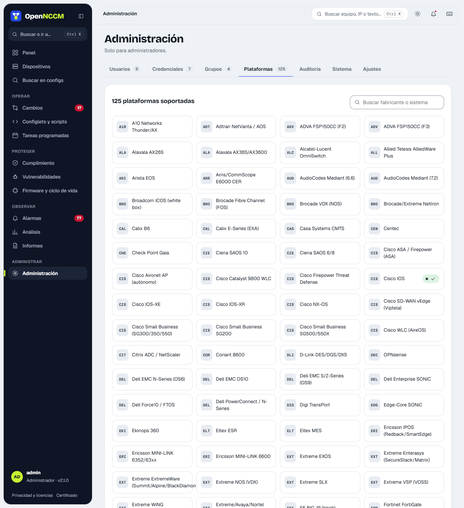
La interfaz se adapta a pantallas pequeñas: abajo aparece una barra con Panel, Equipos, Cambios, Alarmas y Más (que abre la barra lateral completa) y los indicadores se muestran en dos columnas. Si el teléfono usa tema oscuro, la aplicación también.
No requiere instalar ninguna app: basta con abrir la dirección del servidor en el navegador del teléfono (dentro de la VPN o la red de gestión).
Para scripts y otras herramientas, cada usuario crea sus tokens de API en Mi cuenta › Tokens de API (con nombre y
caducidad opcional de 30, 90 o 365 días). El token se muestra una sola vez; OpenNCCM solo guarda su huella, así que si se
pierde hay que crear otro. Se envía en la cabecera Authorization: Bearer ncm_…, actúa con los permisos y los grupos de
su dueño, solo sirve para /api/… (no para la interfaz web) y se puede revocar en cualquier momento.
| Petición | Qué hace | Rol |
|---|---|---|
GET /api/devices | Inventario: nombre, IP, tipo, modelo, serie, versión, estado y último respaldo. | Lector |
GET /api/devices/{id} | Ficha del equipo (grupo, ubicación, notas, último error, línea base). | Lector |
GET /api/devices/{id}/versions | Versiones guardadas (hasta 500), con origen y líneas cambiadas. | Lector |
GET /api/devices/{id}/config[?version=N] | Configuración en texto: la última o la versión N. | Lector |
POST /api/devices/{id}/backup | Respalda ahora; devuelve first, changed, unchanged o error. | Operador |
POST /api/devices | Alta con JSON: name, host, device_type y opcionales port, protocol, credential, group, location, notes. | Administrador |
Sin token o con uno caducado se responde 401; sin permiso, 403. Las altas, respaldos y lecturas de configuración por la API quedan en Auditoría.
GET /healthz devuelve {"status":"ok"} para sistemas de monitoreo.
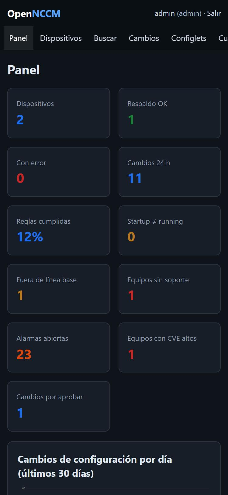
| Término | Significado |
|---|---|
| Running / startup | Configuración en ejecución (activa) / guardada para el próximo arranque. |
| Versión | Copia de la configuración guardada cuando cambia. |
| Línea base | Versión aprobada que sirve de referencia. |
| Configlet | Plantilla de comandos reutilizable. |
| Solicitud de cambio | Propuesta de aplicar comandos que debe aprobarse. |
| Reversión | Volver a una configuración anterior. |
| Ventana de mantenimiento | Periodo en que OpenNCCM aplica un cambio aprobado; sus avisos syslog no se tratan como intrusión. |
| Política / regla | Conjunto de controles / control individual de cumplimiento. |
| device_type | Identificador de la plataforma (driver de Netmiko), p. ej. cisco_ios. |
| CVE / CVSS | Identificador público de una vulnerabilidad / su puntuación de gravedad (0–10). |
| EOL / EOS | Fin de vida / fin de venta o soporte de un modelo. |
| SCP / MD5 | Copia segura de archivos sobre SSH / huella para verificar que el archivo llegó íntegro. |
| Syslog | Protocolo con el que los equipos envían sus mensajes de registro. |